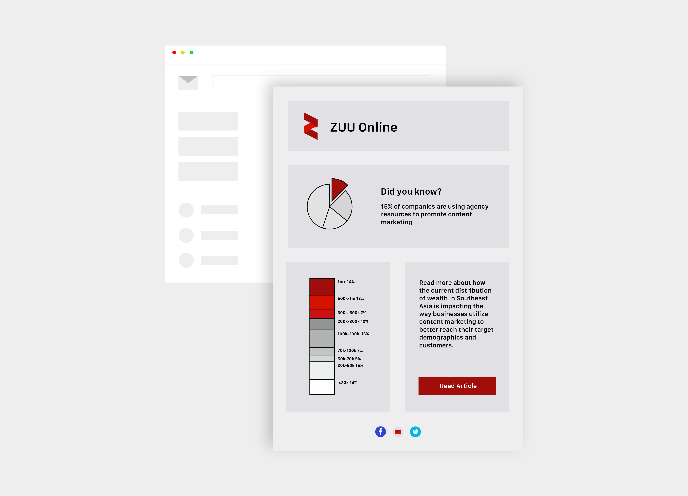
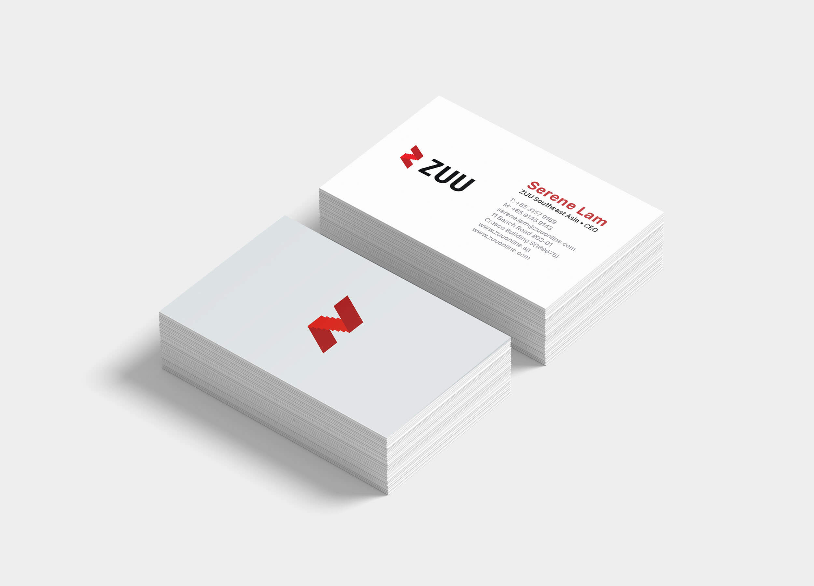

05 ZUU Online Branding

ZUU Online Singapore's main focus is to educated consumers on the fintech market, establish strong B2B relationships with fintech companies in Southeast Asia and encourage stakeholders to wisely invest. With this in mind, I redesigned ZUU's business cards, media kits and electronic newsletter templates. Combining the startup's signature red color with cool greys and bold graphics I created a professional, approachable and modern visual identity.
